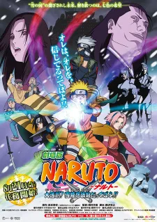
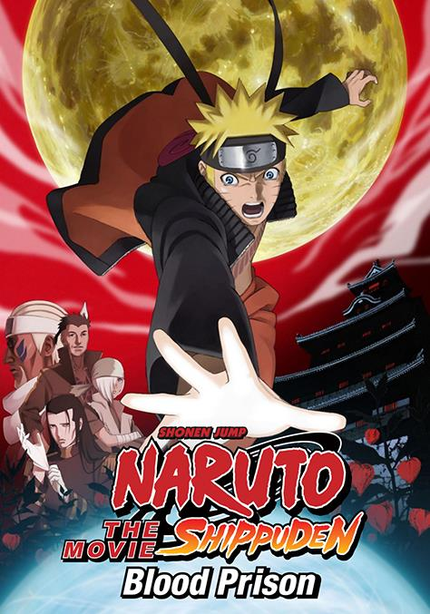

Available Cinema

Naruto the Movie: Ninja Clash in the Land of Snow
Naruto protects an actress who is actually a princess hunted by Snow ninja.

Blood Prison (2011)
Naruto is falsely imprisoned and must uncover a conspiracy.
Naruto Shippuden the Movie (2007)
Naruto protects a priestess destined to die while stopping a revived demon.

The Lost Tower (2010)
Naruto travels to the past and meets the Fourth Hokage.

Road to Ninja (2012)
Naruto and Sakura enter an alternate world with reversed personalities.

Naruto Shippuden the Movie (2007)
Tobi traps Naruto and Sakura in a reversed world where Naruto's parents might still be alive.

The Will of Fire (2009)
A war threatens to start, and Naruto fights to save Kakashi.

The Bonds (2008)
The Leaf is attacked from the sky; Naruto and Sasuke fight together again.
 Naruto Uzumaki — Junko Takeuchi
Naruto Uzumaki — Junko Takeuchi
 Sasuke Uchiha — Noriaki Sugiyama
Sasuke Uchiha — Noriaki Sugiyama
 Sakura Haruno — Chie Nakamura
Sakura Haruno — Chie Nakamura
 Kakashi Hatake — Kazuhiko Inoue
Kakashi Hatake — Kazuhiko Inoue